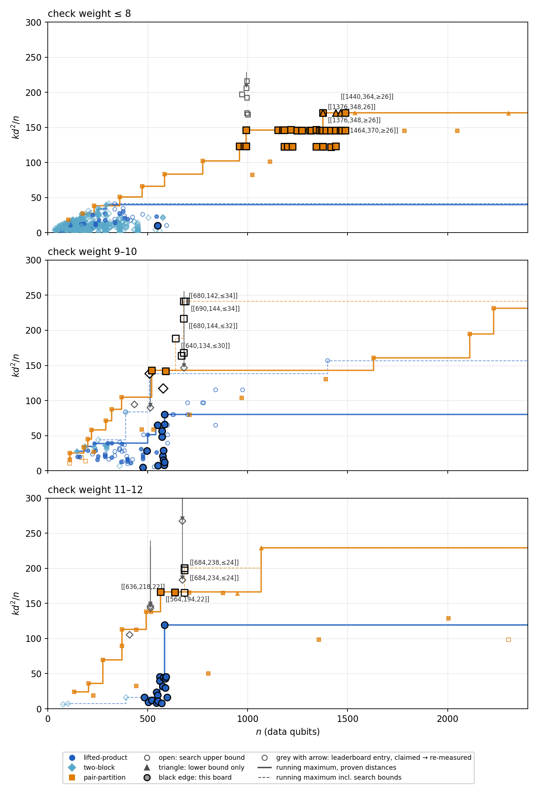

Every row states what is actually proven about the distance. exact: a certificate excludes all lighter logical operators
and an explicit operator of that weight is given. search bound: the lightest logical operator found by a long GPU search
(directed BP+OSD, 600 s to 3600 s per run, several runs), with the operator published so that anyone can check it; the true
distance may be smaller. lower bound: a certificate without a matching operator. Leaderboard rows are entries of the
Unitary Foundation qLDPC challenge re-measured with the same search; the arrow in the figure runs from the claimed distance to
the lightest operator we found. Check matrices and operator supports are in the repository; tools/check_all.py
re-verifies everything.
| code | n | k | d | w | k d²/n | family | status | origin | construction | evidence | files |
|---|---|---|---|---|---|---|---|---|---|---|---|
| [[674,44,≤64]] claimed ≤89 | 674 | 44 | 64 | 12 | 267.4 | two-block | search bound | leaderboard, re-measured | board entry 674-44-89 (generalized-bicycle); matrices rebuilt from the entry's check lists Unitary Foundation qLDPC challenge, entry 674-44-89, snapshot eb2aeae (2026-11-01) | our GPU directed BP+OSD search (v5), runs: 600 s seed 0: 68; 600 s seed 1: 71; 3600 s seed 0: 67; 3600 s seed 1: 64; lighter operators than the claim exist | operators board entry |
| [[680,142,≤34]] | 680 | 142 | 34 | 10 | 241.4 | pair-partition | search bound | this board | C2 x C34, template (4, 10), check weight 10 pair-partition construction inside our evolution framework; line n700smoke (2026-11-01), program a5b691014ad745eb, program family pp_j4l10_c2xc34_catalogue_intersection4, archive 545796683e8e28d8 | GPU directed BP+OSD search (v5): 600 s x 3 and 3600 s x 2 (v5): 34/36/36/34/34 | H_X H_Z operators |
| [[690,144,≤34]] | 690 | 144 | 34 | 10 | 241.2 | pair-partition | search bound | this board | C3 x C23, template (4, 10), check weight 10 pair-partition construction inside our evolution framework; line v5a (2026-11-02), program d1c1209dbbece20a, program family pp_j4l10_c3xc23_rank_cyclefibres_novel, archive ea020f49826f14a4 | GPU directed BP+OSD search (v5): 600 s x 3 and 3600 s x 2 (v5): 34 in all five | H_X H_Z operators |
| [[680,144,≤32]] | 680 | 144 | 32 | 10 | 216.8 | pair-partition | search bound | this board | C2 x C34, template (4, 10), check weight 10 pair-partition construction inside our evolution framework; line n700smoke (2026-11-01), program family pp_j4l10_c2xc34_catalogue_intersection4, archive c6873368c56df888 | GPU directed BP+OSD search (v5): 600 s x 3 and 3600 s x 2 (v5): 32; operator supports not yet saved, a witness run is queued | H_X H_Z |
| [[996,166,≤36]] claimed ≤36 | 996 | 166 | 36 | 8 | 216.0 | pair-partition | search bound | leaderboard, re-measured | board entry 996-166-36 (pair-partition-cpm); matrices rebuilt from the entry's check lists Unitary Foundation qLDPC challenge, entry 996-166-36, snapshot eb2aeae (2026-11-01) | our GPU directed BP+OSD search (v5), runs: 600 s seed 0: 36; 600 s seed 1: 36; 3600 s seed 0: 36; 3600 s seed 1: 36; the claimed distance held under these searches | board entry |
| [[994,142,≤38]] claimed ≤40 | 994 | 142 | 38 | 8 | 206.3 | pair-partition | search bound | leaderboard, re-measured | board entry 994-142-40 (pair-partition-cpm); matrices rebuilt from the entry's check lists Unitary Foundation qLDPC challenge, entry 994-142-40, snapshot eb2aeae (2026-11-01) | our GPU directed BP+OSD search (v5), runs: 600 s seed 0: 38; 600 s seed 1: 38; 3600 s seed 0: 38; 3600 s seed 1: 38; lighter operators than the claim exist | board entry |
| [[684,238,≤24]] | 684 | 238 | 24 | 12 | 200.4 | pair-partition | search bound | this board | group Z_3 x Z_19, template (4, 12), check weight 12 pair-partition construction inside our evolution framework; line v5a (2026-11-02), program family pp_j4l12_c3xc19_rankfibres, archive 34b56e790ae27e72 | GPU directed BP+OSD search (v5): 600 s x 2 and 3600 s x 2 (v5): 24; operator supports not yet saved, a witness run is queued | H_X H_Z |
| [[684,238,≤24]] | 684 | 238 | 24 | 12 | 200.4 | pair-partition | search bound | this board | group Z_3 x Z_19, template (4, 12), check weight 12 pair-partition construction inside our evolution framework; line v5a (2026-11-02), program family pp_j4l12_c3xc19_joint_latin_novel, archive e403972be941771c | GPU directed BP+OSD search (v5): 600 s x 2 and 3600 s x 2 (v5): 24; operator supports not yet saved, a witness run is queued | H_X H_Z |
| [[972,166,≤34]] claimed ≤34 | 972 | 166 | 34 | 8 | 197.4 | pair-partition | search bound | leaderboard, re-measured | board entry 972-166-34 (pair-partition-cpm); matrices rebuilt from the entry's check lists Unitary Foundation qLDPC challenge, entry 972-166-34, snapshot eb2aeae (2026-11-01) | our GPU directed BP+OSD search (v5), runs: 600 s seed 0: 34; 600 s seed 1: 34; 3600 s seed 0: 34; 3600 s seed 1: 34; the claimed distance held under these searches | board entry |
| [[684,234,≤24]] | 684 | 234 | 24 | 12 | 197.1 | pair-partition | search bound | this board | group Z_3 x Z_19, template (4, 12), shortened, check weight 12 pair-partition construction inside our evolution framework; line v5a (2026-11-02), program family pp_j4l12_c3xc19_overlapfibres_shortened, archive aa0979d7bc395762 | GPU directed BP+OSD search (v5): 600 s x 2 and 3600 s x 2 (v5): 24; operator supports not yet saved, a witness run is queued | H_X H_Z |
| [[996,166,≤34]] claimed ≤34 | 996 | 166 | 34 | 8 | 192.7 | pair-partition | search bound | leaderboard, re-measured | board entry 996-166-34 (pair-partition-cpm); matrices rebuilt from the entry's check lists Unitary Foundation qLDPC challenge, entry 996-166-34, snapshot eb2aeae (2026-11-01) | our GPU directed BP+OSD search (v5), runs: 600 s seed 0: 34; 600 s seed 1: 34; 3600 s seed 0: 34; 3600 s seed 1: 34; the claimed distance held under these searches | board entry |
| [[640,134,≤30]] | 640 | 134 | 30 | 10 | 188.4 | pair-partition | search bound | this board | Z32 x Z2, template (4, 10), check weight 10 pair-partition construction inside our evolution framework; line n700a (2026-11-01), program family pp_j4l10_z32xz2_controlledcollision_bank, archive b9df990a83cdd824 | GPU directed BP+OSD search (v5): 600 s x 3 and 3600 s x 2 (v5): 30; operator supports not yet saved, a witness run is queued | H_X H_Z |
| [[674,44,≤53]] claimed ≤91 | 674 | 44 | 53 | 12 | 183.4 | two-block | search bound | leaderboard, re-measured | board entry 674-44-91 (generalized-bicycle); matrices rebuilt from the entry's check lists Unitary Foundation qLDPC challenge, entry 674-44-91, snapshot eb2aeae (2026-11-01) | our GPU directed BP+OSD search (v5), runs: 600 s seed 0: 53; 600 s seed 1: 53; 3600 s seed 0: 53; 3600 s seed 1: 53; lighter operators than the claim exist | operators board entry |
| [[1376,348,26]] | 1376 | 348 | 26 | 8 | 171.0 | pair-partition | exact | this board | H = apm4:2:3, acting on Z_p with p = 43 (affine action), template (3, 8), check weight 8 hand-designed non-abelian pair-partition codes (2026-10-31, not from the evolution runs); record out_apm2_b60s0_c069 | certificate: no logical operator through weight 25 on both sides, even weights; operator of weight 26 found by the certifier | H_X H_Z |
| [[1376,348,≥26]] | 1376 | 348 | 26 | 8 | 171.0 | pair-partition | lower bound | this board | H = apm4:2:3, acting on Z_p with p = 43 (affine action), template (3, 8), check weight 8 hand-designed non-abelian pair-partition codes (2026-10-31, not from the evolution runs); record out_apm3_b60s0_c128 | certificate: no logical operator through weight 24 on both sides, even weights | H_X H_Z |
| [[1440,364,≥26]] | 1440 | 364 | 26 | 8 | 170.9 | pair-partition | lower bound | this board | H = apm4:2:3, acting on Z_p with p = 45 (affine action), template (3, 8), check weight 8 hand-designed non-abelian pair-partition codes (2026-10-31, not from the evolution runs); record out_apm3_b60s0_c155 | certificate: no logical operator through weight 25 on both sides, even weights | H_X H_Z |
| [[1464,370,≥26]] | 1464 | 370 | 26 | 8 | 170.8 | pair-partition | lower bound | this board | H = apm3:2:2, acting on Z_p with p = 61 (affine action), template (3, 8), check weight 8 hand-designed non-abelian pair-partition codes (2026-10-31, not from the evolution runs); record out_apm3_b60s0_c261 | certificate: no logical operator through weight 24 on both sides, even weights | H_X H_Z |
| [[1488,376,26]] | 1488 | 376 | 26 | 8 | 170.8 | pair-partition | exact | this board | H = apm3:2:2, acting on Z_p with p = 62 (affine action), template (3, 8), check weight 8 hand-designed non-abelian pair-partition codes (2026-10-31, not from the evolution runs); record out_apm_b60s0_c093 | certificate: no logical operator through weight 25 on both sides, even weights; operator of weight 26 found by the certifier | H_X H_Z |
| [[996,166,≤32]] claimed ≤32 | 996 | 166 | 32 | 8 | 170.7 | pair-partition | search bound | leaderboard, re-measured | board entry 996-166-32 (pair-partition-cpm); matrices rebuilt from the entry's check lists Unitary Foundation qLDPC challenge, entry 996-166-32, snapshot eb2aeae (2026-11-01) | our GPU directed BP+OSD search (v5), runs: 600 s seed 0: 32; 600 s seed 1: 32; 3600 s seed 0: 32; 3600 s seed 1: 32; the claimed distance held under these searches | board entry |
| [[680,146,≤28]] | 680 | 146 | 28 | 10 | 168.3 | pair-partition | search bound | this board | C2 x C34, template (4, 10), check weight 10 pair-partition construction inside our evolution framework; line n700smoke (2026-11-01), program family pp_j4l10_c2xc34_catalogue_intersection4, archive 41bbe89574bb496e | GPU directed BP+OSD search (v5): 600 s x 3 and 3600 s x 2 (v5): 28; operator supports not yet saved, a witness run is queued | H_X H_Z |
| [[1000,200,≤29]] claimed ≤29 | 1000 | 200 | 29 | 8 | 168.2 | pair-partition | search bound | leaderboard, re-measured | board entry 1000-200-29 (pair-partition-cpm); matrices rebuilt from the entry's check lists Unitary Foundation qLDPC challenge, entry 1000-200-29, snapshot eb2aeae (2026-11-01) | our GPU directed BP+OSD search (v5), runs: 600 s seed 0: 29; 600 s seed 1: 29; 3600 s seed 0: 29; 3600 s seed 1: 29; the claimed distance held under these searches | board entry |
| [[564,194,22]] | 564 | 194 | 22 | 12 | 166.5 | pair-partition | exact | this board | cyclic group Z_47, template (J, L) = (4, 12), check weight 12 pair-partition construction of arXiv:2609.30069 inside our evolution framework; evolution run pp_scratch_opus_20261030 (Claude Opus 5.5 proposer), program 9c3917928976397d, slot 3 | certificate: no logical operator through weight 20 on both sides, even weights; operators of weight 22 | H_X H_Z operators |
| [[636,218,22]] | 636 | 218 | 22 | 12 | 165.9 | pair-partition | exact | this board | cyclic group Z_53, template (4, 12), check weight 12 pair-partition construction inside our evolution framework; gpt-6.1-sol line n700a / v5a (2026-11-01/02), archive 724fb87415f9545d | certificate: no logical operator through weight 20 on both sides, even weights; operators of weight 22 | H_X H_Z operators |
| [[636,218,22]] | 636 | 218 | 22 | 12 | 165.9 | pair-partition | exact | this board | cyclic group Z_53, template (4, 12), check weight 12 pair-partition construction inside our evolution framework; gpt-6.1-sol line n700a / v5a (2026-11-01/02), archive e247724ac99dd3ca | certificate: no logical operator through weight 20 on both sides, even weights; operators of weight 22 | H_X H_Z operators |
| [[684,234,≤22]] | 684 | 234 | 22 | 12 | 165.6 | pair-partition | search bound | this board | group Z_3 x Z_19, template (4, 12), shortened, check weight 12 pair-partition construction inside our evolution framework; line v5a (2026-11-02), program family pp_j4l12_c3xc19_overlapfibres_shortened, archive 72b747aad9d63446 | GPU directed BP+OSD search (v5): 600 s x 2 and 3600 s x 2 (v5): 22/24 -> 22; operator supports not yet saved, a witness run is queued | H_X H_Z |
| [[670,140,≤28]] | 670 | 140 | 28 | 10 | 163.8 | pair-partition | search bound | this board | cyclic group Z_67, template (4, 10) with one row removed, check weight 10 pair-partition construction inside our evolution framework; line v5a (2026-11-02), program family pp_j4l10_zprime_missingrow_cyclefibres, archive 15e94ea54fe5bc15 | GPU directed BP+OSD search (v5): 600 s x 2 and 3600 s x 2 (v5): 28; operator supports not yet saved, a witness run is queued | H_X H_Z |
| [[1216,310,24]] | 1216 | 310 | 24 | 8 | 146.8 | pair-partition | exact | this board | H = apm4:2:3, acting on Z_p with p = 38 (affine action), template (3, 8), check weight 8 hand-designed non-abelian pair-partition codes (2026-10-31, not from the evolution runs); record out_apm3_b60s0_c077 | certificate: no logical operator through weight 23 on both sides, even weights; operator of weight 24 found by the certifier | H_X H_Z |
| [[682,40,≤50]] claimed ≤66 | 682 | 40 | 50 | 10 | 146.6 | two-block | search bound | leaderboard, re-measured | board entry 682-40-66 (generalized-bicycle); matrices rebuilt from the entry's check lists Unitary Foundation qLDPC challenge, entry 682-40-66, snapshot eb2aeae (2026-11-01) | our GPU directed BP+OSD search (v5), runs: 600 s seed 0: 50; 600 s seed 1: 50; 3600 s seed 0: 50; 3600 s seed 1: 50; lighter operators than the claim exist | operators board entry |
| [[1344,342,24]] | 1344 | 342 | 24 | 8 | 146.6 | pair-partition | exact | this board | H = apm4:2:3, acting on Z_p with p = 42 (affine action), template (3, 8), check weight 8 hand-designed non-abelian pair-partition codes (2026-10-31, not from the evolution runs); record out_apm3_b60s0_c121 | certificate: no logical operator through weight 23 on both sides, even weights; operator of weight 24 found by the certifier | H_X H_Z |
| [[992,252,24]] | 992 | 252 | 24 | 8 | 146.3 | pair-partition | exact | this board | D4 acting on Z_4 (x -> +-x + c) times Z_31: affine permutations on Z_124, template (3, 8), check weight 8 non-abelian pair-partition codes from our evolution framework; gpt-6.1-sol line l8a (2026-11-01), step 15; construction file construction_992_252_24.json of the run | certificate: no logical operator through weight 22 on both sides, even weights; operator of weight 24 found by the certifier | H_X H_Z |
| [[514,34,≤47]] claimed ≤59 | 514 | 34 | 47 | 12 | 146.1 | two-block | search bound | leaderboard, re-measured | board entry 514-34-59 (generalized-bicycle); matrices rebuilt from the entry's check lists Unitary Foundation qLDPC challenge, entry 514-34-59, snapshot eb2aeae (2026-11-01) | our GPU directed BP+OSD search (v5), runs: 600 s seed 0: 54; 600 s seed 1: 54; 3600 s seed 0: 47; 3600 s seed 1: 51; lighter operators than the claim exist | board entry |
| [[1152,292,24]] | 1152 | 292 | 24 | 8 | 146.0 | pair-partition | exact | this board | H = apm3:2:2, acting on Z_p with p = 48 (affine action), template (3, 8), check weight 8 hand-designed non-abelian pair-partition codes (2026-10-31, not from the evolution runs); record out_apm3_b60s0_c189 | certificate: no logical operator through weight 23 on both sides, even weights; operator of weight 24 found by the certifier | H_X H_Z |
| [[1176,298,24]] | 1176 | 298 | 24 | 8 | 146.0 | pair-partition | exact | this board | H = apm3:2:2, acting on Z_p with p = 49 (affine action), template (3, 8), check weight 8 hand-designed non-abelian pair-partition codes (2026-10-31, not from the evolution runs); record out_apm3_b60s0_c194 | certificate: no logical operator through weight 23 on both sides, even weights; operator of weight 24 found by the certifier | H_X H_Z |
| [[1184,300,24]] | 1184 | 300 | 24 | 8 | 145.9 | pair-partition | exact | this board | H = apm4:2:3, acting on Z_p with p = 37 (affine action), template (3, 8), check weight 8 hand-designed non-abelian pair-partition codes (2026-10-31, not from the evolution runs); record out_apm_b60s0_c017 | certificate: no logical operator through weight 23 on both sides, even weights; operator of weight 24 found by the certifier | H_X H_Z |
| [[1248,316,24]] | 1248 | 316 | 24 | 8 | 145.8 | pair-partition | exact | this board | H = apm4:2:3, acting on Z_p with p = 39 (affine action), template (3, 8), check weight 8 hand-designed non-abelian pair-partition codes (2026-10-31, not from the evolution runs); record out_apm3_b60s0_c090 | certificate: no logical operator through weight 23 on both sides, even weights; operator of weight 24 found by the certifier | H_X H_Z |
| [[1248,316,24]] | 1248 | 316 | 24 | 8 | 145.8 | pair-partition | exact | this board | H = apm4:2:3, acting on Z_p with p = 39 (affine action), template (3, 8), check weight 8 hand-designed non-abelian pair-partition codes (2026-10-31, not from the evolution runs); record out_apm_b60s0_c022 | certificate: no logical operator through weight 23 on both sides, even weights; operator of weight 24 found by the certifier | H_X H_Z |
| [[1248,316,24]] | 1248 | 316 | 24 | 8 | 145.8 | pair-partition | exact | this board | H = apm3:2:2, acting on Z_p with p = 52 (affine action), template (3, 8), check weight 8 hand-designed non-abelian pair-partition codes (2026-10-31, not from the evolution runs); record out_apm3_b60s0_c214 | certificate: no logical operator through weight 23 on both sides, even weights; operator of weight 24 found by the certifier | H_X H_Z |
| [[1248,316,24]] | 1248 | 316 | 24 | 8 | 145.8 | pair-partition | exact | this board | H = apm3:2:2, acting on Z_p with p = 52 (affine action), template (3, 8), check weight 8 hand-designed non-abelian pair-partition codes (2026-10-31, not from the evolution runs); record out_apm3_b60s0_c212 | certificate: no logical operator through weight 23 on both sides, even weights; operator of weight 24 found by the certifier | H_X H_Z |
| [[1248,316,24]] | 1248 | 316 | 24 | 8 | 145.8 | pair-partition | exact | this board | H = apm3:2:2, acting on Z_p with p = 52 (affine action), template (3, 8), check weight 8 hand-designed non-abelian pair-partition codes (2026-10-31, not from the evolution runs); record out_apm2_b60s0_c127 | certificate: no logical operator through weight 23 on both sides, even weights; operator of weight 24 found by the certifier | H_X H_Z |
| [[1272,322,24]] | 1272 | 322 | 24 | 8 | 145.8 | pair-partition | exact | this board | H = apm3:2:2, acting on Z_p with p = 53 (affine action), template (3, 8), check weight 8 hand-designed non-abelian pair-partition codes (2026-10-31, not from the evolution runs); record out_apm3_b60s0_c217 | certificate: no logical operator through weight 23 on both sides, even weights; operator of weight 24 found by the certifier | H_X H_Z |
| [[1272,322,24]] | 1272 | 322 | 24 | 8 | 145.8 | pair-partition | exact | this board | H = apm3:2:2, acting on Z_p with p = 53 (affine action), template (3, 8), check weight 8 hand-designed non-abelian pair-partition codes (2026-10-31, not from the evolution runs); record out_apm3_b60s0_c216 | certificate: no logical operator through weight 23 on both sides, even weights; operator of weight 24 found by the certifier | H_X H_Z |
| [[1272,322,24]] | 1272 | 322 | 24 | 8 | 145.8 | pair-partition | exact | this board | H = apm3:2:2, acting on Z_p with p = 53 (affine action), template (3, 8), check weight 8 hand-designed non-abelian pair-partition codes (2026-10-31, not from the evolution runs); record out_apm3_b60s0_c213 | certificate: no logical operator through weight 23 on both sides, even weights; operator of weight 24 found by the certifier | H_X H_Z |
| [[1272,322,24]] | 1272 | 322 | 24 | 8 | 145.8 | pair-partition | exact | this board | H = apm3:2:2, acting on Z_p with p = 53 (affine action), template (3, 8), check weight 8 hand-designed non-abelian pair-partition codes (2026-10-31, not from the evolution runs); record out_apm_b60s0_c073 | certificate: no logical operator through weight 23 on both sides, even weights; operator of weight 24 found by the certifier | H_X H_Z |
| [[1312,332,24]] | 1312 | 332 | 24 | 8 | 145.8 | pair-partition | exact | this board | H = apm4:2:3, acting on Z_p with p = 41 (affine action), template (3, 8), check weight 8 hand-designed non-abelian pair-partition codes (2026-10-31, not from the evolution runs); record out_apm2_b60s0_c056 | certificate: no logical operator through weight 23 on both sides, even weights; operator of weight 24 found by the certifier | H_X H_Z |
| [[1312,332,24]] | 1312 | 332 | 24 | 8 | 145.8 | pair-partition | exact | this board | H = apm4:2:3, acting on Z_p with p = 41 (affine action), template (3, 8), check weight 8 hand-designed non-abelian pair-partition codes (2026-10-31, not from the evolution runs); record out_apm3_b60s0_c108 | certificate: no logical operator through weight 23 on both sides, even weights; operator of weight 24 found by the certifier | H_X H_Z |
| [[1312,332,24]] | 1312 | 332 | 24 | 8 | 145.8 | pair-partition | exact | this board | H = apm4:2:3, acting on Z_p with p = 41 (affine action), template (3, 8), check weight 8 hand-designed non-abelian pair-partition codes (2026-10-31, not from the evolution runs); record out_apm3_b60s0_c109 | certificate: no logical operator through weight 23 on both sides, even weights; operator of weight 24 found by the certifier | H_X H_Z |
| [[1312,332,24]] | 1312 | 332 | 24 | 8 | 145.8 | pair-partition | exact | this board | H = apm4:2:3, acting on Z_p with p = 41 (affine action), template (3, 8), check weight 8 hand-designed non-abelian pair-partition codes (2026-10-31, not from the evolution runs); record out_apm_b60s0_c029 | certificate: no logical operator through weight 23 on both sides, even weights; operator of weight 24 found by the certifier | H_X H_Z |
| [[1320,334,24]] | 1320 | 334 | 24 | 8 | 145.8 | pair-partition | exact | this board | H = apm3:2:2, acting on Z_p with p = 55 (affine action), template (3, 8), check weight 8 hand-designed non-abelian pair-partition codes (2026-10-31, not from the evolution runs); record out_apm3_b60s0_c230 | certificate: no logical operator through weight 23 on both sides, even weights; operator of weight 24 found by the certifier | H_X H_Z |
| [[1360,344,24]] | 1360 | 344 | 24 | 8 | 145.7 | pair-partition | exact | this board | H = 5:2:4, acting on Z_p with p = 17 (regular action), template (3, 8), check weight 8 hand-designed non-abelian pair-partition codes (2026-10-31, not from the evolution runs); record out_small_b60s0_c067 | certificate: no logical operator through weight 23 on both sides, even weights; operator of weight 24 found by the certifier | H_X H_Z |
| [[1368,346,24]] | 1368 | 346 | 24 | 8 | 145.7 | pair-partition | exact | this board | H = apm3:2:2, acting on Z_p with p = 57 (affine action), template (3, 8), check weight 8 hand-designed non-abelian pair-partition codes (2026-10-31, not from the evolution runs); record out_apm3_b60s0_c242 | certificate: no logical operator through weight 23 on both sides, even weights; operator of weight 24 found by the certifier | H_X H_Z |
| [[1376,348,24]] | 1376 | 348 | 24 | 8 | 145.7 | pair-partition | exact | this board | H = apm4:2:3, acting on Z_p with p = 43 (affine action), template (3, 8), check weight 8 hand-designed non-abelian pair-partition codes (2026-10-31, not from the evolution runs); record out_apm2_b60s0_c072 | certificate: no logical operator through weight 23 on both sides, even weights; operator of weight 24 found by the certifier | H_X H_Z |
| [[1392,352,24]] | 1392 | 352 | 24 | 8 | 145.7 | pair-partition | exact | this board | H = apm6:2:5, acting on Z_p with p = 29 (affine action), template (3, 8), check weight 8 hand-designed non-abelian pair-partition codes (2026-10-31, not from the evolution runs); record out_apm2_b60s0_c071 | certificate: no logical operator through weight 23 on both sides, even weights; operator of weight 24 found by the certifier | H_X H_Z |
| [[1392,352,24]] | 1392 | 352 | 24 | 8 | 145.7 | pair-partition | exact | this board | H = apm3:2:2, acting on Z_p with p = 58 (affine action), template (3, 8), check weight 8 hand-designed non-abelian pair-partition codes (2026-10-31, not from the evolution runs); record out_apm3_b60s0_c247 | certificate: no logical operator through weight 23 on both sides, even weights; operator of weight 24 found by the certifier | H_X H_Z |
| [[1416,358,24]] | 1416 | 358 | 24 | 8 | 145.6 | pair-partition | exact | this board | H = apm3:2:2, acting on Z_p with p = 59 (affine action), template (3, 8), check weight 8 hand-designed non-abelian pair-partition codes (2026-10-31, not from the evolution runs); record out_apm2_b60s0_c141 | certificate: no logical operator through weight 23 on both sides, even weights; operator of weight 24 found by the certifier | H_X H_Z |
| [[1416,358,24]] | 1416 | 358 | 24 | 8 | 145.6 | pair-partition | exact | this board | H = apm3:2:2, acting on Z_p with p = 59 (affine action), template (3, 8), check weight 8 hand-designed non-abelian pair-partition codes (2026-10-31, not from the evolution runs); record out_apm2_b60s0_c142 | certificate: no logical operator through weight 23 on both sides, even weights; operator of weight 24 found by the certifier | H_X H_Z |
| [[1440,364,24]] | 1440 | 364 | 24 | 8 | 145.6 | pair-partition | exact | this board | H = apm3:2:2, acting on Z_p with p = 60 (affine action), template (3, 8), check weight 8 hand-designed non-abelian pair-partition codes (2026-10-31, not from the evolution runs); record out_apm2_b60s0_c144 | certificate: no logical operator through weight 23 on both sides, even weights; operator of weight 24 found by the certifier | H_X H_Z |
| [[1440,364,24]] | 1440 | 364 | 24 | 8 | 145.6 | pair-partition | exact | this board | H = apm4:2:3, acting on Z_p with p = 45 (affine action), template (3, 8), check weight 8 hand-designed non-abelian pair-partition codes (2026-10-31, not from the evolution runs); record out_apm_b60s0_c046 | certificate: no logical operator through weight 23 on both sides, even weights; operator of weight 24 found by the certifier | H_X H_Z |
| [[1464,370,24]] | 1464 | 370 | 24 | 8 | 145.6 | pair-partition | exact | this board | H = apm3:2:2, acting on Z_p with p = 61 (affine action), template (3, 8), check weight 8 hand-designed non-abelian pair-partition codes (2026-10-31, not from the evolution runs); record out_apm_b60s0_c090 | certificate: no logical operator through weight 23 on both sides, even weights; operator of weight 24 found by the certifier | H_X H_Z |
| [[1464,370,24]] | 1464 | 370 | 24 | 8 | 145.6 | pair-partition | exact | this board | H = apm3:2:2, acting on Z_p with p = 61 (affine action), template (3, 8), check weight 8 hand-designed non-abelian pair-partition codes (2026-10-31, not from the evolution runs); record out_apm3_b60s0_c267 | certificate: no logical operator through weight 23 on both sides, even weights; operator of weight 24 found by the certifier | H_X H_Z |
| [[1464,370,24]] | 1464 | 370 | 24 | 8 | 145.6 | pair-partition | exact | this board | H = apm3:2:2, acting on Z_p with p = 61 (affine action), template (3, 8), check weight 8 hand-designed non-abelian pair-partition codes (2026-10-31, not from the evolution runs); record out_apm3_b60s0_c266 | certificate: no logical operator through weight 23 on both sides, even weights; operator of weight 24 found by the certifier | H_X H_Z |
| [[1472,372,24]] | 1472 | 372 | 24 | 8 | 145.6 | pair-partition | exact | this board | H = apm4:2:3, acting on Z_p with p = 46 (affine action), template (3, 8), check weight 8 hand-designed non-abelian pair-partition codes (2026-10-31, not from the evolution runs); record out_apm3_b60s0_c160 | certificate: no logical operator through weight 23 on both sides, even weights; operator of weight 24 found by the certifier | H_X H_Z |
| [[1472,372,24]] | 1472 | 372 | 24 | 8 | 145.6 | pair-partition | exact | this board | H = apm4:2:3, acting on Z_p with p = 46 (affine action), template (3, 8), check weight 8 hand-designed non-abelian pair-partition codes (2026-10-31, not from the evolution runs); record out_apm3_b60s0_c157 | certificate: no logical operator through weight 23 on both sides, even weights; operator of weight 24 found by the certifier | H_X H_Z |
| [[1488,376,24]] | 1488 | 376 | 24 | 8 | 145.6 | pair-partition | exact | this board | H = 3:2:2, acting on Z_p with p = 31 (regular action), template (3, 8), check weight 8 hand-designed non-abelian pair-partition codes (2026-10-31, not from the evolution runs); record out_small_b60s0_c080 | certificate: no logical operator through weight 23 on both sides, even weights; operator of weight 24 found by the certifier | H_X H_Z |
| [[514,32,≤48]] claimed ≤62 | 514 | 32 | 48 | 12 | 143.4 | two-block | search bound | leaderboard, re-measured | board entry 514-32-62 (generalized-bicycle); matrices rebuilt from the entry's check lists Unitary Foundation qLDPC challenge, entry 514-32-62, snapshot eb2aeae (2026-11-01) | our GPU directed BP+OSD search (v5), runs: 600 s seed 0: 48; 600 s seed 1: 48; 3600 s seed 0: 48; 3600 s seed 1: 48; lighter operators than the claim exist | operators board entry |
| [[520,110,26]] | 520 | 110 | 26 | 10 | 143.0 | pair-partition | exact | this board | group Z_2 x Z_2 x Z_13 (not cyclic), template (4, 10), check weight 10 pair-partition construction of arXiv:2609.30069 inside our evolution framework; evolution run pp_scratch_opus_20261030 (Claude Opus 5.5 proposer), program f6d864c771909d77, slot 2 | certificate: no logical operator through weight 24 on both sides, even weights; operators of weight 26 | H_X H_Z operators |
| [[590,124,26]] | 590 | 124 | 26 | 10 | 142.1 | pair-partition | exact | this board | cyclic group Z_59, template (4, 10), check weight 10 pair-partition construction of arXiv:2609.30069 inside our evolution framework; evolution run pp_catalog_opus_20261030 (Claude Opus 5.5 proposer), program cee8b24e42a16764, slot 3 | certificate: no logical operator through weight 24 on both sides, even weights; operators of weight 26 | H_X H_Z operators |
| [[510,40,≤42]] | 510 | 40 | 42 | 10 | 138.3 | two-block | search bound | this board | group C_255, protograph shapes (1,1) x (1,1), lift size 255 arXiv:2606.24808 (v2), run cc_v7_gpt61sol500_w12_10c_out, rate cell 0 (FOM objective) | GPU directed BP+OSD search (v5), 600 s x 2 and 3600 s x 2, plus two-hour runs of the earlier estimator and QDistRnd 1e9 information sets; lightest weight found 42 | H_X H_Z operators |
| [[1440,366,22]] | 1440 | 366 | 22 | 8 | 123.0 | pair-partition | exact | this board | H = apm6:2:5, acting on Z_p with p = 30 (affine action), template (3, 8), check weight 8 hand-designed non-abelian pair-partition codes (2026-10-31, not from the evolution runs); record out_apm2_b60s0_c081 | certificate: no logical operator through weight 21 on both sides, even weights; operator of weight 22 found by the certifier | H_X H_Z |
| [[960,244,22]] | 960 | 244 | 22 | 8 | 123.0 | pair-partition | exact | this board | S3 x Z_p, regular action, template (3, 8), check weight 8 non-abelian pair-partition codes from our evolution framework; line l8smoke1 (2026-11-01), seed program, slot 43 | certificate: no logical operator through weight 20 on both sides, even weights; operator of weight 22 found by the certifier | H_X H_Z |
| [[984,250,22]] | 984 | 250 | 22 | 8 | 123.0 | pair-partition | exact | this board | S3 affine x Z_p, template (3, 8), check weight 8 non-abelian pair-partition codes from our evolution framework; line l8smoke1 (2026-11-01), seed program, slot 50 | certificate: no logical operator through weight 20 on both sides, even weights; operator of weight 22 found by the certifier | H_X H_Z |
| [[992,252,22]] | 992 | 252 | 22 | 8 | 123.0 | pair-partition | exact | this board | D4 affine x Z_p, template (3, 8), check weight 8 non-abelian pair-partition codes from our evolution framework; line l8smoke1 (2026-11-01), seed program, slot 53 | certificate: no logical operator through weight 20 on both sides, even weights; operator of weight 22 found by the certifier | H_X H_Z |
| [[992,252,22]] | 992 | 252 | 22 | 8 | 123.0 | pair-partition | exact | this board | D4 affine x Z_p, template (3, 8), check weight 8 non-abelian pair-partition codes from our evolution framework; line l8smoke1 (2026-11-01), seed program, slot 46 | certificate: no logical operator through weight 20 on both sides, even weights; operator of weight 22 found by the certifier | H_X H_Z |
| [[1184,300,22]] | 1184 | 300 | 22 | 8 | 122.6 | pair-partition | exact | this board | H = apm4:2:3, acting on Z_p with p = 37 (affine action), template (3, 8), check weight 8 hand-designed non-abelian pair-partition codes (2026-10-31, not from the evolution runs); record out_apm3_b60s0_c068 | certificate: no logical operator through weight 21 on both sides, even weights; operator of weight 22 found by the certifier | H_X H_Z |
| [[1200,304,22]] | 1200 | 304 | 22 | 8 | 122.6 | pair-partition | exact | this board | H = apm6:2:5, acting on Z_p with p = 25 (affine action), template (3, 8), check weight 8 hand-designed non-abelian pair-partition codes (2026-10-31, not from the evolution runs); record out_apm2_b60s0_c037 | certificate: no logical operator through weight 21 on both sides, even weights; operator of weight 22 found by the certifier | H_X H_Z |
| [[1200,304,22]] | 1200 | 304 | 22 | 8 | 122.6 | pair-partition | exact | this board | H = apm3:2:2, acting on Z_p with p = 50 (affine action), template (3, 8), check weight 8 hand-designed non-abelian pair-partition codes (2026-10-31, not from the evolution runs); record out_apm2_b60s0_c119 | certificate: no logical operator through weight 21 on both sides, even weights; operator of weight 22 found by the certifier | H_X H_Z |
| [[1224,310,22]] | 1224 | 310 | 22 | 8 | 122.6 | pair-partition | exact | this board | H = apm3:2:2, acting on Z_p with p = 51 (affine action), template (3, 8), check weight 8 hand-designed non-abelian pair-partition codes (2026-10-31, not from the evolution runs); record out_apm3_b60s0_c204 | certificate: no logical operator through weight 21 on both sides, even weights; operator of weight 22 found by the certifier | H_X H_Z |
| [[1344,340,22]] | 1344 | 340 | 22 | 8 | 122.4 | pair-partition | exact | this board | H = apm3:2:2, acting on Z_p with p = 56 (affine action), template (3, 8), check weight 8 hand-designed non-abelian pair-partition codes (2026-10-31, not from the evolution runs); record out_apm2_b60s0_c136 | certificate: no logical operator through weight 21 on both sides, even weights; operator of weight 22 found by the certifier | H_X H_Z |
| [[1376,348,22]] | 1376 | 348 | 22 | 8 | 122.4 | pair-partition | exact | this board | H = apm4:2:3, acting on Z_p with p = 43 (affine action), template (3, 8), check weight 8 hand-designed non-abelian pair-partition codes (2026-10-31, not from the evolution runs); record out_apm3_b60s0_c132 | certificate: no logical operator through weight 21 on both sides, even weights; operator of weight 22 found by the certifier | H_X H_Z |
| [[1376,348,22]] | 1376 | 348 | 22 | 8 | 122.4 | pair-partition | exact | this board | H = apm4:2:3, acting on Z_p with p = 43 (affine action), template (3, 8), check weight 8 hand-designed non-abelian pair-partition codes (2026-10-31, not from the evolution runs); record out_apm_b60s0_c044 | certificate: no logical operator through weight 21 on both sides, even weights; operator of weight 22 found by the certifier | H_X H_Z |
| [[1416,358,22]] | 1416 | 358 | 22 | 8 | 122.4 | pair-partition | exact | this board | H = apm3:2:2, acting on Z_p with p = 59 (affine action), template (3, 8), check weight 8 hand-designed non-abelian pair-partition codes (2026-10-31, not from the evolution runs); record out_apm3_b60s0_c252 | certificate: no logical operator through weight 21 on both sides, even weights; operator of weight 22 found by the certifier | H_X H_Z |
| [[1416,358,22]] | 1416 | 358 | 22 | 8 | 122.4 | pair-partition | exact | this board | H = apm3:2:2, acting on Z_p with p = 59 (affine action), template (3, 8), check weight 8 hand-designed non-abelian pair-partition codes (2026-10-31, not from the evolution runs); record out_apm_b60s0_c086 | certificate: no logical operator through weight 21 on both sides, even weights; operator of weight 22 found by the certifier | H_X H_Z |
| [[585,121,24]] | 585 | 121 | 24 | 12 | 119.1 | lifted-product | exact | this board | group C_13 : C_9, protograph shapes (1,2) x (1,2), lift size 117 arXiv:2606.24808 (v2), run cc_v7_gpt61sol500_w12_10c_out, rate cell 2 (FOM objective) | certificate: no logical operator through weight None on both sides (sce-qldpc: records/exact_bb_20261006_61 and records/recert_v5_20261014) | H_X H_Z |
| [[578,32,≤46]] | 578 | 32 | 46 | 10 | 117.2 | two-block | search bound | this board | group C_17 x C_17, protograph shapes (1,1) x (1,1), lift size 289 arXiv:2606.24808 (v2), run cc_v7_gpt61sol500_w12_10c_out, rate cell 0 (FOM objective) | GPU directed BP+OSD search (v5), 600 s x 2 and 3600 s x 2, plus two-hour runs of the earlier estimator and QDistRnd 1e9 information sets; lightest weight found 46 | H_X H_Z operators |
| [[410,48,≤30]] claimed ≤30 | 410 | 48 | 30 | 12 | 105.4 | two-block | search bound | leaderboard, re-measured | board entry 410-48-30 (generalized-bicycle); matrices rebuilt from the entry's check lists Unitary Foundation qLDPC challenge, entry 410-48-30, snapshot eb2aeae (2026-11-01) | our GPU directed BP+OSD search (v5), runs: 600 s seed 0: 30; 600 s seed 1: 30; 3600 s seed 0: 30; 3600 s seed 1: 30; the claimed distance held under these searches | board entry |
| [[434,40,≤32]] claimed ≤32 | 434 | 40 | 32 | 10 | 94.4 | two-block | search bound | leaderboard, re-measured | board entry 434-40-32 (generalized-bicycle); matrices rebuilt from the entry's check lists Unitary Foundation qLDPC challenge, entry 434-40-32, snapshot eb2aeae (2026-11-01) | our GPU directed BP+OSD search (v5), runs: 600 s seed 0: 32; 600 s seed 1: 32; 3600 s seed 0: 32; 3600 s seed 1: 32; the claimed distance held under these searches | board entry |
| [[514,32,≤38]] claimed ≤46 | 514 | 32 | 38 | 10 | 89.9 | two-block | search bound | leaderboard, re-measured | board entry 514-32-46 (generalized-bicycle); matrices rebuilt from the entry's check lists Unitary Foundation qLDPC challenge, entry 514-32-46, snapshot eb2aeae (2026-11-01) | our GPU directed BP+OSD search (v5), runs: 600 s seed 0: 38; 600 s seed 1: 38; 3600 s seed 0: 38; 3600 s seed 1: 38; lighter operators than the claim exist | board entry |
| [[585,117,20]] | 585 | 117 | 20 | 9 | 80.0 | lifted-product | exact | this board | group C_13 : C_9, protograph shapes (1,2) x (1,2), lift size 117 arXiv:2606.24808 (v2), level-1 refinement of the 258th child of the weight-9 run, replicate 1, child 5 | certificate: no logical operator through weight None on both sides (sce-qldpc: records/exact_v5_20261022_refinement) | H_X H_Z |
| [[585,119,18]] | 585 | 119 | 18 | 9 | 65.9 | lifted-product | exact | this board | group C_13 : C_9, protograph shapes (1,2) x (1,2), lift size 117 arXiv:2606.24808 (v2), run cc_v7_gpt61sol500_w9_10c_out, rate cell 2 (FOM objective) | certificate: no logical operator through weight None on both sides (sce-qldpc: records/w9cert_20261013 and records/exact_v5_20261017_w9cell0) | H_X H_Z |
| [[550,110,18]] | 550 | 110 | 18 | 9 | 64.8 | lifted-product | exact | this board | group C_11 : C_10, protograph shapes (1,2) x (1,2), lift size 110 arXiv:2606.24808 (v2), run cc_v7_gpt61sol500_w9_10c_out, rate cell 2 (FOM objective) | certificate: no logical operator through weight None on both sides (sce-qldpc: records/w9cert_20261013 and records/exact_v5_20261017_w9cell0) | H_X H_Z |
| [[572,67,22]] | 572 | 67 | 22 | 10 | 56.7 | lifted-product | exact | this board | group Dic_11, protograph shapes (2,3) x (2,3), lift size 44 arXiv:2606.24808 (v2), run pl10_gpt61sol_out, rate cell 0 (CLER objective) | certificate: no logical operator through weight None on both sides (sce-qldpc: records/exact_bb_20261006_61 and records/recert_v5_20261014) | H_X H_Z |
| [[572,48,24]] | 572 | 48 | 24 | 9 | 48.3 | lifted-product | exact | this board | group Dic_11, protograph shapes (2,3) x (2,3), lift size 44 arXiv:2606.24808 (v2), run cc_v7_gpt61sol500_w9_10c_out, rate cell 0 (FOM objective) | certificate: no logical operator through weight None on both sides (sce-qldpc: records/w9cert_20261013 and records/exact_v5_20261017_w9cell0) | H_X H_Z |
| [[560,130,14]] | 560 | 130 | 14 | 12 | 45.5 | lifted-product | exact | this board | group Dic_7, protograph shapes (2,4) x (2,4), lift size 28 arXiv:2606.24808 (v2), run cc_v7_gpt61sol500_w12_10c_out, rate cell 3 (FOM objective) | certificate: no logical operator through weight None on both sides (sce-qldpc: records/exact_bb_20261006_61 and records/recert_v5_20261014) | H_X H_Z |
| [[592,83,18]] | 592 | 83 | 18 | 12 | 45.4 | lifted-product | exact | this board | group C_37, protograph shapes (2,3) x (2,4), lift size 37 arXiv:2606.24808 (v2), run cc_v7_gpt61sol500_w12_10c_out, rate cell 1 (FOM objective) | certificate: no logical operator through weight None on both sides (sce-qldpc: records/exact_bb_20261006_61 and records/recert_v5_20261014) | H_X H_Z |
| [[580,132,14]] | 580 | 132 | 14 | 12 | 44.6 | lifted-product | exact | this board | group C_29, protograph shapes (2,4) x (2,4), lift size 29 arXiv:2606.24808 (v2), run pl10_gpt61sol_out, rate cell 3 (CLER objective) | certificate: no logical operator through weight None on both sides (sce-qldpc: records/exact_bb_20261006_61 and records/recert_v5_20261014) | H_X H_Z |
| [[588,176,12]] | 588 | 176 | 12 | 12 | 43.1 | lifted-product | exact | this board | group Dic_21, protograph shapes (1,2) x (1,3), lift size 84 arXiv:2606.24808 (v2), run cc_v7_gpt61sol500_w12_10c_out, rate cell 4 (FOM objective) | certificate: no logical operator through weight None on both sides (sce-qldpc: records/exact_bb_20261006_61 and records/recert_v5_20261014) | H_X H_Z |
| [[560,224,10]] | 560 | 224 | 10 | 12 | 40.0 | lifted-product | exact | this board | group AGL(1,8), protograph shapes (1,3) x (1,3), lift size 56 arXiv:2606.24808 (v2), run cc_v7_gpt61sol500_w12_10c_out, rate cell 6 (FOM objective) | certificate: no logical operator through weight None on both sides (sce-qldpc: records/exact_bb_20261006_61 and records/recert_v5_20261014) | H_X H_Z |
| [[576,82,15]] | 576 | 82 | 15 | 11 | 32.0 | lifted-product | exact | this board | group Dic_9, protograph shapes (2,3) x (2,4), lift size 36 arXiv:2606.24808 (v2), run pl10_gpt61sol_out, rate cell 1 (CLER objective) | certificate: no logical operator through weight None on both sides (sce-qldpc: records/exact_bb_20261006_61 and records/recert_v5_20261014) | H_X H_Z |
| [[588,176,10]] | 588 | 176 | 10 | 12 | 29.9 | lifted-product | exact | this board | group C_2 x (C_7 : C_3), protograph shapes (1,2) x (2,6), lift size 42 arXiv:2606.24808 (v2), run pl10_gpt61sol_out, rate cell 4 (CLER objective) | certificate: no logical operator through weight None on both sides (sce-qldpc: records/exact_bb_20261006_61 and records/recert_v5_20261014) | H_X H_Z |
| [[580,116,12]] | 580 | 116 | 12 | 10 | 28.8 | lifted-product | exact | this board | group C_29, protograph shapes (2,4) x (2,4), lift size 29 arXiv:2606.24808 (v2), run pl10_gpt61sol_out, rate cell 2 (CLER objective) | certificate: no logical operator through weight None on both sides (sce-qldpc: records/exact_bb_20261006_61 and records/recert_v5_20261014) | H_X H_Z |
| [[496,72,14]] | 496 | 72 | 14 | 9 | 28.4 | lifted-product | exact | this board | group C_31, protograph shapes (2,3) x (2,4), lift size 31 arXiv:2606.24808 (v2), run cc_v7_gpt61sol500_w9_10c_out, rate cell 1 (FOM objective) | certificate: no logical operator through weight None on both sides (sce-qldpc: records/w9cert_20261013 and records/exact_v5_20261017_w9cell0) | H_X H_Z |
| [[544,200,8]] | 544 | 200 | 8 | 12 | 23.5 | lifted-product | exact | this board | group Q_16, protograph shapes (2,5) x (2,6), lift size 16 arXiv:2606.24808 (v2), run cc_v7_gpt61sol500_w12_10c_out, rate cell 5 (FOM objective) | certificate: no logical operator through weight None on both sides (sce-qldpc: records/exact_bb_20261006_61 and records/recert_v5_20261014) | H_X H_Z |
| [[576,150,9]] | 576 | 150 | 9 | 9 | 21.1 | lifted-product | exact | this board | group C_3 : C_16, protograph shapes (1,2) x (2,5), lift size 48 arXiv:2606.24808 (v2), run cc_v7_gpt61sol500_w9_10c_out, rate cell 3 (FOM objective) | certificate: no logical operator through weight None on both sides (sce-qldpc: records/w9cert_20261013 and records/exact_v5_20261017_w9cell0) | H_X H_Z |
| [[550,220,7]] | 550 | 220 | 7 | 11 | 19.6 | lifted-product | exact | this board | group C_11 : C_5, protograph shapes (1,3) x (1,3), lift size 55 arXiv:2606.24808 (v2), run pl10_gpt61sol_out, rate cell 6 (CLER objective) | certificate: no logical operator through weight None on both sides (sce-qldpc: records/exact_bb_20261006_61 and records/recert_v5_20261014) | H_X H_Z |
| [[483,220,6]] | 483 | 220 | 6 | 12 | 16.4 | lifted-product | exact | this board | group C_7 : C_3, protograph shapes (1,3) x (2,7), lift size 21 arXiv:2606.24808 (v2), run cc_v7_gpt61sol500_w12_10c_out, rate cell 7 (FOM objective) | certificate: no logical operator through weight None on both sides (sce-qldpc: records/exact_bb_20261006_61 and records/recert_v5_20261014) | H_X H_Z |
| [[598,195,7]] | 598 | 195 | 7 | 12 | 16.0 | lifted-product | exact | this board | group C_13, protograph shapes (2,5) x (3,8), lift size 13 arXiv:2606.24808 (v2), run pl10_gpt61sol_out, rate cell 5 (CLER objective) | certificate: no logical operator through weight None on both sides (sce-qldpc: records/exact_bb_20261006_61 and records/recert_v5_20261014) | H_X H_Z |
| [[580,180,7]] | 580 | 180 | 7 | 9 | 15.2 | lifted-product | exact | this board | group C_5 : C_4, protograph shapes (2,5) x (2,5), lift size 20 arXiv:2606.24808 (v2), run cc_v7_gpt61sol500_w9_10c_out, rate cell 4 (FOM objective) | certificate: no logical operator through weight None on both sides (sce-qldpc: records/w9cert_20261013 and records/exact_v5_20261017_w9cell0) | H_X H_Z |
| [[584,200,6]] | 584 | 200 | 6 | 9 | 12.3 | lifted-product | exact | this board | group C_8, protograph shapes (3,8) x (3,8), lift size 8 arXiv:2606.24808 (v2), run cc_v7_gpt61sol500_w9_10c_out, rate cell 5 (FOM objective) | certificate: no logical operator through weight None on both sides (sce-qldpc: records/w9cert_20261013 and records/exact_v5_20261017_w9cell0) | H_X H_Z |
| [[520,252,5]] | 520 | 252 | 5 | 12 | 12.1 | lifted-product | exact | this board | group C_5 : C_8, protograph shapes (1,3) x (1,4), lift size 40 arXiv:2606.24808 (v2), run cc_v7_gpt61sol500_w12_10c_out, rate cell 8 (FOM objective) | certificate: no logical operator through weight None on both sides (sce-qldpc: records/exact_bb_20261006_61 and records/recert_v5_20261014) | H_X H_Z |
| [[552,240,5]] | 552 | 240 | 5 | 12 | 10.9 | lifted-product | exact | this board | group C_3 : C_8, protograph shapes (1,3) x (2,7), lift size 24 arXiv:2606.24808 (v2), run pl10_gpt61sol_out, rate cell 7 (CLER objective) | certificate: no logical operator through weight None on both sides (sce-qldpc: records/exact_bb_20261006_61 and records/recert_v5_20261014) | H_X H_Z |
| [[550,226,5]] | 550 | 226 | 5 | 8 | 10.3 | lifted-product | exact | this board | group C_11 : C_5, protograph shapes (1,3) x (1,3), lift size 55 arXiv:2606.24808 (v2), run cc_v7_gpt61sol500_w9_10c_out, rate cell 6 (FOM objective) | certificate: no logical operator through weight None on both sides (sce-qldpc: records/w9cert_20261013 and records/exact_v5_20261017_w9cell0) | H_X H_Z |
| [[504,297,4]] | 504 | 297 | 4 | 12 | 9.4 | lifted-product | exact | this board | group S_3 x C_4, protograph shapes (1,4) x (1,5), lift size 24 arXiv:2606.24808 (v2), run cc_v7_gpt61sol500_w12_10c_out, rate cell 9 (FOM objective) | certificate: no logical operator through weight None on both sides (sce-qldpc: records/exact_bb_20261006_61 and records/recert_v5_20261014) | H_X H_Z |
| [[544,288,4]] | 544 | 288 | 4 | 12 | 8.5 | lifted-product | exact | this board | group SD_32, protograph shapes (1,4) x (1,4), lift size 32 arXiv:2606.24808 (v2), run pl10_gpt61sol_out, rate cell 9 (CLER objective) | certificate: no logical operator through weight None on both sides (sce-qldpc: records/exact_bb_20261006_61 and records/recert_v5_20261014) | H_X H_Z |
| [[570,288,4]] | 570 | 288 | 4 | 12 | 8.1 | lifted-product | exact | this board | group C_19, protograph shapes (1,4) x (2,7), lift size 19 arXiv:2606.24808 (v2), run pl10_gpt61sol_out, rate cell 8 (CLER objective) | certificate: no logical operator through weight None on both sides (sce-qldpc: records/exact_bb_20261006_61 and records/recert_v5_20261014) | H_X H_Z |
| [[583,287,4]] | 583 | 287 | 4 | 9 | 7.9 | lifted-product | exact | this board | group C_11, protograph shapes (2,7) x (2,7), lift size 11 arXiv:2606.24808 (v2), run cc_v7_gpt61sol500_w9_10c_out, rate cell 8 (FOM objective) | certificate: no logical operator through weight None on both sides (sce-qldpc: records/w9cert_20261013 and records/exact_v5_20261017_w9cell0) | H_X H_Z |
| [[552,258,4]] | 552 | 258 | 4 | 9 | 7.5 | lifted-product | exact | this board | group C_12 : C_2, protograph shapes (1,3) x (2,7), lift size 24 arXiv:2606.24808 (v2), run cc_v7_gpt61sol500_w9_10c_out, rate cell 7 (FOM objective) | certificate: no logical operator through weight None on both sides (sce-qldpc: records/w9cert_20261013 and records/exact_v5_20261017_w9cell0) | H_X H_Z |
| [[476,252,3]] | 476 | 252 | 3 | 9 | 4.8 | lifted-product | exact | this board | group Dic_7, protograph shapes (1,4) x (1,4), lift size 28 arXiv:2606.24808 (v2), run cc_v7_gpt61sol500_w9_10c_out, rate cell 9 (FOM objective) | certificate: no logical operator through weight None on both sides (sce-qldpc: records/w9cert_20261013 and records/exact_v5_20261017_w9cell0) | H_X H_Z |
Published codes (parameters as printed, from the literature survey of 2026-10-18 and the pair-partition catalogue of arXiv:2609.30069) are small markers; entries of this board have black edges; leaderboard entries are grey with an arrow from the claim to the re-measured value. Lines are the running maximum of k d²/n over n per family (solid: proven distances only; dashed: including search bounds).
